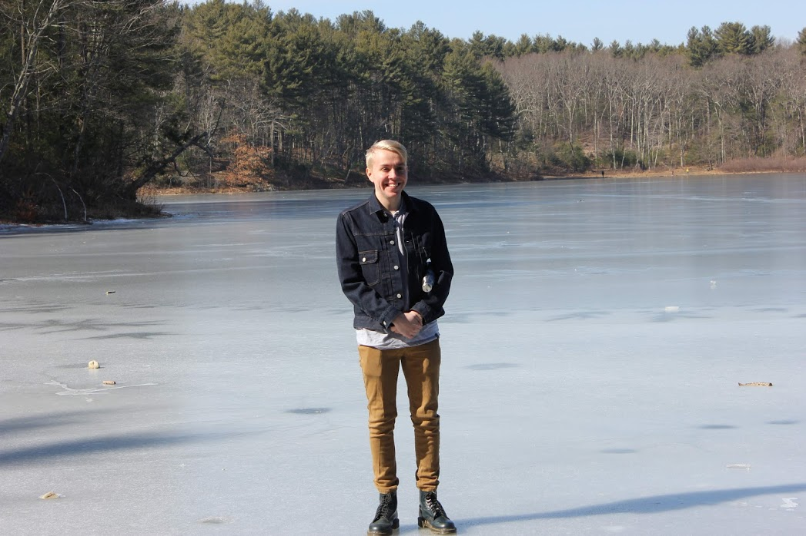

Hi there! This website is in need of an update, which is in progress!!
If you would like to get in contact with me, please feel free to visit my LinkedIn at the link above :)
My name is Kyle, and I am a third year undergraduate computer science major at Northeastern University, anticipating graduation in Spring 2022!
I have completed two co-ops throughout my college experiece so far.
The first at the True Fit Corporation, a fashion technology company headquartered in downtown Boston. Feel free to check out my resume for more details on the specific work I did there, but this was a great experience for my personal growth as a developer! I had a chance to work on a wonderful DevOps team, working with tons of different technologies and getting my first experience with major software codebases.
The second at Heila Technologies, a cleantech microgrid startup headquarted in Somerville, MA. It was awesome working both in clean energy, and at a rapidly evolving startup. I got the chance to solve new kinds of problems every day, and really work alongside everyone at the company, rapidly adapting to new situations and areas.
Currently, I am seeking a third and final a co-op opportinity for the later part of this year, with availability from May - December 2021!
This website is very much a work in progress, but feel free to check out my LinkedIn and my Projects page for more informaion about me.
And feel free to reach out! me@kyl3smith.com
Why kyl3smith.com?
There are many, many Smiths in the world. (2.5 million in the US!)
Feel free to use these other Domain Names that redirect here if you prefer!